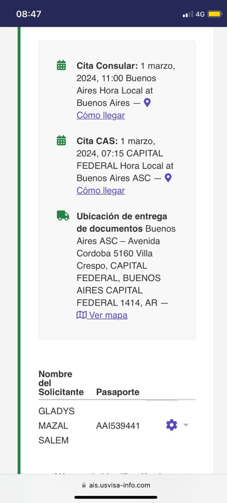
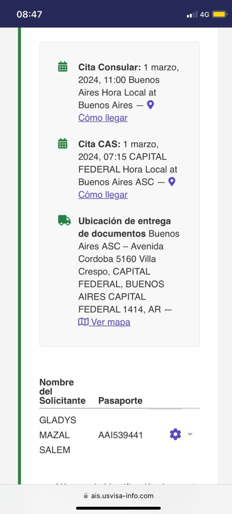

En la actualidad, una vez completado el Formulario DS-160 y abonada la Tasa Consular, a la hora de seleccionar un turno, la disponibilidad es de entre seis
meses y un año.
Nosotros ofrecemos el servicio de adelanto de turno, en el que conseguimos adelantar las citas dentro de los tres meses de comenzado el trámite.
Además, es importante, en caso de que se
trate de una renovación, de hacerlo cercano a la fecha de expiración, ya que de esa forma se simplifica mucho el trámite.
 
